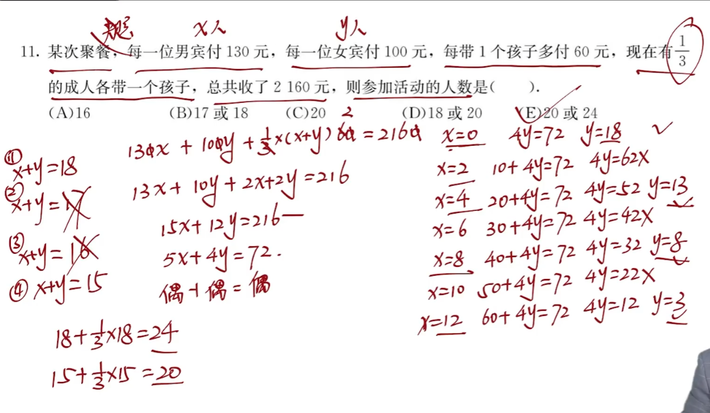

2025-08-01创建
一个数除4，5，6都余1，求这个数的最小可能值
$x-1 = (4,5,6)k$
$x= (4,5,6)k +1$
一个数除4，5，6分别余3，4，5（差1个整除），求这个数的最小可能值
$x+1 =(4,5,6)k$
$x = (4,5,6)k-1$
一个数除4余3，除5余2，除6余1（和相同），求这个数的最小可能值
$$ \begin{cases} x-3 = 4k_1 \\ x-2 = 5k_2 \\ x-1 = 6k_3 \end{cases} $$
$$ \begin{cases} x-7 = 4k_1-4 \\ x-7 = 5k_2-5 \\ x-7 = 6k_3-6 \end{cases} $$
说明 $(x-7)$ 可以被 4，5，6 整除
$x-7 = (4,5,6)k$
$x = (4,5,6)k+7$
题目中有可能不会直观的体现和同、余同、差同，例如除2余1等价于除2差1等价于除2多1，要会转化
e.g. 除5余3，除8余4
$5k_1+3 = 8k_2+4$
$5(k_1-k_2)=3k_2+1$，令 $k_2$ 取值满足整数要求，这里取 $k_2=3$
代入求得即可
$x,y,z$ 为质数，倒数和为 $\frac{1661}{1986}$，求 $xyz$ 的和
通分发现分母即为 $xyz$，于是将1986用短除法得到3个质因数，即为 $xyz$
$x ∈ Z$，$x^2+8x-20$ 为质数，求这个质数。
$x^2+8x-20 \rightarrow (x-2)(x+10)$ 为质数 $\rightarrow$ 其中一个为1，另一个即为质数本身。讨论
$x*y = (x,y)*[x,y]$
$$ \begin{cases} x = ak \\ y = bk \\ (x,y) = k \\ [x,y] = abk \\ (a,b) = 1 \end{cases} $$
e.g. 最大公因数是6，最小公倍数是72，解 $xy$
$k=6,abk = 72,ab =12$，由于 $ab$ 互质
讨论 $ab$ 的多种组合 1×12？3×4？2×6？（排除）
将 $ak$，$bk$ 分别带入看哪个满足题设

$a^2-b^2 = (a+b)(a-b)$
$abab$ 公式：$ab-ma-nb + mn = (a-n)(b-m)$